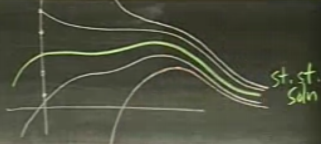
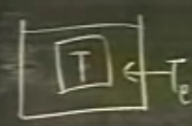
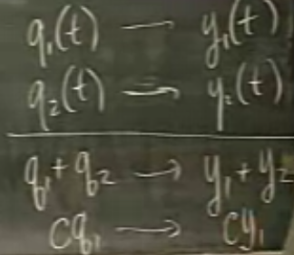
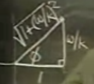

Ders 7
Özel form
$$ y' + ky = kq_e(t) $$
Şu çözülünce
$$ y'+ky = q(t) $$
şu elde edilir
$$ y = e^{-kt} \int q(t) e^{kt} \mathrm{d} t + ce^{-kt}$$
Bu denklemdeki sağ ilk $kt$ ve soldaki $-kt$ üst değerlerinin ters işaretli olduğunu hatırlamanın iyi bir yolu $q(t) = 1$ olunca iç ve dış $e$ değerlerinin birbirini iptal etmesi ve bu sayede sonucun sabit bir sayı olması.
$c$'yi içeren terim artı işaretinden sonra da (üstteki gibi) koyulabilir. Ya da onun yerine entegrale sıfır alt sınırı ve $t$ fuzuli (dummy) değişkeni verilerek tanımsız entegral tanımlı entegral haline de getirilebilir.
Bu denklemde, sadece ve sadece $k>0$ olduğu zaman, $t$ sonsuzluğa giderken $e^{-kt}$ sıfıra gider (ve $c$'nin ne olduğu farketmez), geri kalan
$$ y = e^{-kt} \int q(t) e^{kt} \mathrm{d} t $$
denklemi ise istikrarlı konum (steady-state) çözümü olacaktır.
Denklemdeki $c$ $y(0)$ değerini kullanır.
Birkaç çözümü grafiklersek şöyle bir sonuç görebiliriz. Sarı renkli olan istikrarlı olan çözümdür, diğer tüm çözümler ona yaklaşır. Peki sarı renkli olan grafiğin özel tarafı nedir? Aslında yoktur, tüm çözümler sarıya değil, birbirlerine yaklaşırlar. Daha detaylandırmak gerekirse, aslında bir değil, birden fazla istikrarlı çözüm vardır.

O zaman hangi istikrarlı çözümden bahsetmek gerekir? $ce^{-kt}$'in sıfıra gittiği en basit olanı tabii ki, fakat $ce^{-kt}$'dan önce gelen terim bir şekilde $ce^{-kt}$ ile beraber daha basit bir formüle de izin verebilir. Yani, duruma göre değişir. Genel olarak bizim en basit erişebileceğimiz istikrarlı çözüm seçilir.
$q(t)$'yi bu problemde "girdi" olarak niteleyeceğiz, çünkü hep daha önce bahsettiğimiz sıcaklık problemini, ve o problemdeki $T_e$'yi düşünüyoruz, $T_e$ havuza pompalanan bir sıcaklık girdisi.

Sistemin "cevabı (response)" ise diferansiyel denklemin çözümü $y(t)$.
$q(t)$ yerine $q_e(t)$ kullanalım.
Bu arada, bu denklemde girdilerin üst üste eklenebilmesi özelliği vardır.

$q_1+q_2$ birbirine eklenince sonuç $y_1+y_2$ olur.
Soru: Eğer girdi trigonometrik bir fonksiyon ise ne olur? Bu en önemli durumdur (Fourier serilerinin mevcudiyeti sebebiyle, bu konuya ileride gireceğiz).
$$ y' + ky = kq_e(t) $$
için girdi olarak $\cos(\omega t)$ verilmiş. $\omega$ açısal frekans olarak modelleniyor, yani $2\pi$ içinde kaç tane tam salınımın (oscillation) olduğu. $\cos$ eğrisini hatırlarsak, bir salınım 0 ile $2\pi$ arasındadır, fonksiyon başladığı yere döner, salınım biter. $\omega$ ile salınım şıklığı arttırılabilir, $\omega = 2$ ile 0 ile $2\pi$ arasında iki kere tam salınım olur. Yani frekans kelimesi burada biraz karışıklık yaratabilir, çünkü $2\pi$ içinde olanlara bakıyoruz, 1 birimlik zaman içinde neler olduğuna bakmıyoruz (ki bu frekansın çoğunlukla kullanılan tanımıdır).
Problem
$q_e = \cos \omega t$ girdisini kullanarak cevabı hesapla (yani ODE'yi çöz).
Çözüm için kompleks sayıları kullanacağız. ODE'yi alıp kompleks sayıları kullanan bir hale çevireceğiz. Onu çözeceğiz, sonra elimizdeki cevapla reel sayıların dünyasına döneceğiz. Niye bu geçiş? Çünkü üstel fonksiyonları entegre etmek kolaydır.
$$ e^{i\omega t} = \cos \omega t + i \sin \omega t $$
ODE'yi tekrar yazalım, girdiyi kompleks olarak yazalım
$$ y' + ky = k e^{i\omega t} $$
Fakat bunu yapınca tüm $y$'lerin kompleks hale geldiğini görmek lazım, bunu belirgin hale getirmek için $y$ yerine $\tilde{y}$ kullanalım
$$ \tilde{y}' + k\tilde{y} = k e^{i\omega t} $$
$\tilde{y}$ kompleks çözümdür ve $\tilde{y} = y_1 + iy_2$. O zaman her şeyi çözüp çözümü bulup $\tilde{y}$'yi elde edersek aradığımız çözüm $\tilde{y}$'nin reel kısmıdır. Bunun niye işlediğinin ispatı bu dokümanın altında.
Çözelim. Entegre edici faktör $e^{kt}$. İki tarafı çarpalım
$$ (\tilde{y} e^{kt} )' = k e^{(k + i\omega)t} $$
$$ \tilde{y}e^{kt} = \frac{k}{k+iw} e^{(k+i\omega)t}$$
$$ \tilde{y} = \frac{k}{k+iw} e^{i\omega t}$$
Bir ölçekleme yaparak bölümü $k$'ye bölelim ve sabitleri gruplayalım
$$ \tilde{y} = \frac{1}{1+i(\frac{w}{k})} e^{i\omega t}$$
Reel kısmını bulalım. Nasıl? Üstteki sonucun iki kısmı var, birinci faktör kartezyen, ikinci kısım kutupsal. Elimizdeki seçenekler de bunlar.
-
Kutupsal forma geç
-
Kartezyen forma geç
Biz kutupsal formu deneyelim. $\tilde{y}$'nin sadece bölenine bakalım. Oradaki form $\cos(1) + i\sin(w/k)$'un grafiksel hali alttaki gibi

Aradaki açı $\phi$, yani $arg(1+i(w/k)) = \phi$.
Kompleks sayılarda bir kural şöyledir, eğer kompleks sayı 1'i bölüyorsa, açı değeri negatiflenir, ayrıca mutlak (absolute), yani $r$ değeri, $1/r$ haline gelir, o zaman
$$ \frac{1}{1+i(w/k)} = A e^{-i\phi} $$
Peki A nedir? A üstteki üçgenin hipotenüsü böleninde yer alan $1 / \sqrt{1+(w/k)^2}$.
$$ A e^{-i\phi} = \frac{1}{\sqrt{1+(w/k)^2}} e^{-i\phi}$$
Artık $\tilde{y}$'yi yazabiliriz. $Ae^{-i\theta}$ ve $e^{i\omega t}$'yi biraraya koyarsak
$$ \tilde{y} = A e^{i\omega t - i\phi} $$
$$ = \frac{1}{\sqrt{1+(w/k)^2}} e^{i(\omega t - \phi)} $$
Reel sonuç için kompleks sistemden reel'e dönüyoruz. Reel kısım kartezyen formda $\cos$ altında olan terimdir, $\sin$ kısmını atarız, o zaman
$$ y_1 = \frac{1}{\sqrt{1+(w/k)^2}} \cos(\omega t - \phi) $$
$\phi$'nin formülü nedir? Üstteki resme göre $\phi = tan^{-1}(w/k)$.
$\cos(\omega t - \phi)$ bağlamında bakarsak $\phi$'ye faz gecikmesi de denebilir, çünkü $\phi$ olmadan $\cos$ eğrisinin nasıl olacağını biliyoruz, $\phi$ eklenince bu $\cos$ eğrisine bir gecikme etkisi yapacaktır.
Ekler
Teori: Alttaki denklem
$$y' + ky = kq_e(t)$$
için girdi $q_e(t)$, $\cos \omega t$ olarak veriliyor. Biz problemi kompleksleştiriyoruz, ve $e^{i\omega t}$ ibaresinin reel tarafının kullanıyoruz çünkü bu ibare Euler formülünün bir parçası. O zaman elimizde şu var
$$y' + ky = k e^{i \omega t}$$
Fakat sonuç ta kompleksleşeceği için notasyonu $y$'den $\tilde{y}$'ye değiştiriyoruz,
$$\tilde{y}' + k\tilde{y} = k e^{i \omega t}$$
kompleks çözüm $\tilde{y} = y_1 + iy_2$. İddiamız $\tilde{y}$'yi bulursak, o zaman $y_1$ ilk, orijinal ODE'yi de çözer.
İspat
$\tilde{y} = y_1 + iy_2$ ifadesini kompleksleşmiş ODE içine koyuyoruz.
$$(y_1 + iy_2)' + k(y_1 + iy_2) = k e^{i\omega t}$$
$$y_1' + iy_2' + ky_1 + kiy_2 = ke^{i\omega t}$$
Reel ve kompleks sayıları yanyana olacak şekilde grupluyoruz
$$(y_1+ky_1) + i(y_2' + ky_2) = ke^{i\omega t}$$
Ve görüyoruz ki üstteki denklemin sol tarafı içindeki reel kısım $(y_1+ky_1)$, orijinal ODE'nin ($y$ için $y_1$ kullanılırsa olacağı) sol tarafı ile tıpatıp aynı, ayrıca üstteki denklemin sağ tarafının reel kısmı $k \cos \omega t$, orijinal ODE'nin sağ tarafına eşit. Yani beklediğimiz çözüm sol tarafta ortaya çıkınca, sağ tarafta girdi olarak verdiğimiz şeyi aynen görüyoruz.